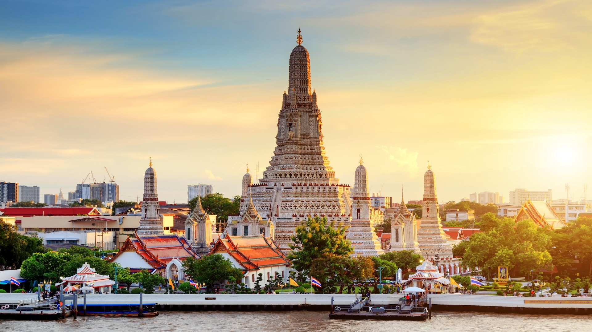
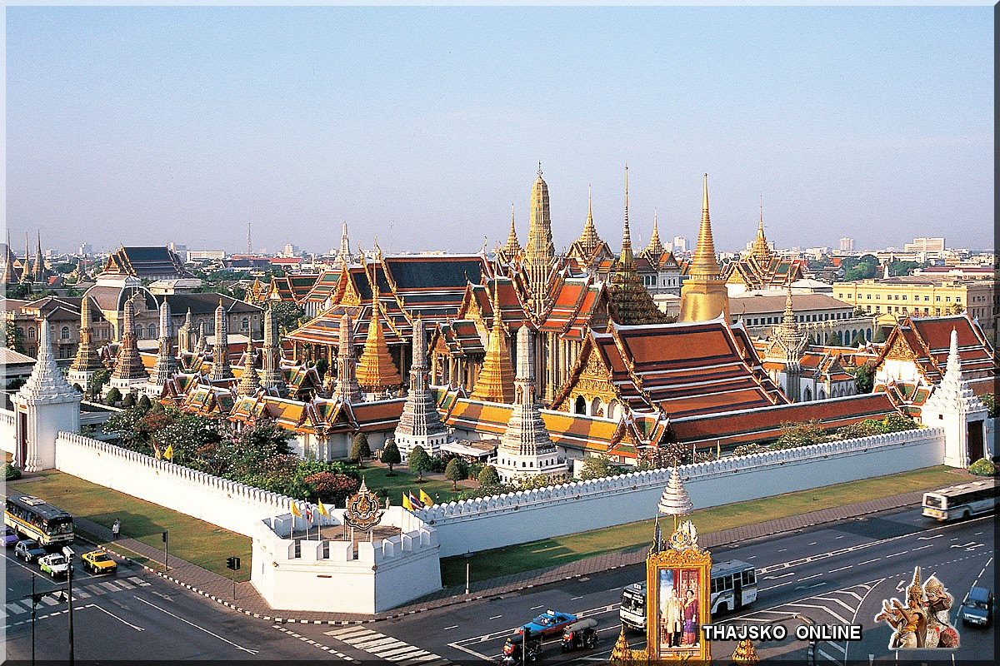
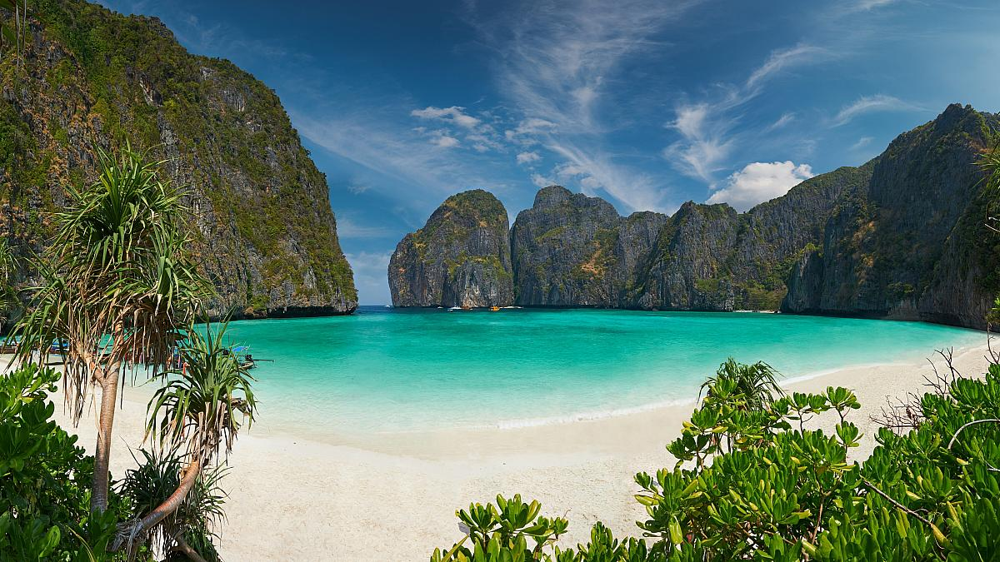

Thajsko
Země zlatých chrámů, rajských pláží a nezapomenutelné kultury.
Počasí v Thajsku
Počasí v Thajsku je tropické, s horkými a vlhkými léty a mírnými zimami. Hlavní období dešťů trvá od května do října, kdy může být silné monzunové deště. Nejlepší čas pro návštěvu je od listopadu do února, kdy jsou teploty příjemnější a deště jsou minimální.
O Thajsku
Thajsko je známé svou bohatou kulturou, exotickými plážemi a historickými památkami. Hlavní město Bangkok je rušné, moderní a plné historických chrámů. Mezi hlavní atrakce patří Ayutthaya, starověké hlavní město, a pláže jako Patong a Railay. Thajsko je také známé svou kuchyní, která je oblíbená po celém světě pro svou pikantnost a rozmanitost chutí.
Roční počasí v Thajsku
| Měsíc | Průměrná teplota (°C) | Teplota moře (°C) |
|---|---|---|
| Leden | 25-32 | 28 |
| Únor | 26-33 | 28 |
| Březen | 27-34 | 29 |
| Duben | 28-35 | 30 |
| Květen | 28-34 | 30 |
| Červen | 27-34 | 29 |
| Červenec | 27-33 | 29 |
| Srpen | 27-33 | 29 |
| Září | 27-32 | 29 |
| Říjen | 26-32 | 29 |
| Listopad | 25-31 | 28 |
| Prosinec | 24-30 | 28 |
Top místa, která musíte navštívit

Wat Arun

Grand Palace
Phang Nga Bay
